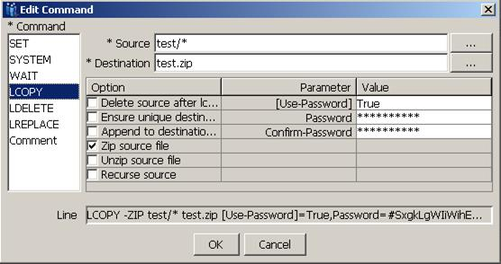

| Cryptographic Services | |
Within the VersaLex LCOPY command, it is possible to encrypt and decrypt zip archive files according to the AES encryption standard (128-bit, 192-bit, and 256-bit). Refer to http://www.winzip.com/aes_info.htm for further information on the AES-encrypted ZIP files. Although this link is published by WinZip®, many other popular compression packages that conform to the ZIP standard (reference Info-ZIP application note, 20040528) also have similar encryption capabilities. For example, 7-Zip supports the ZIP format, plus the additional encryption syntax. To encrypt/decrypt, certain parameters must be specified on the LCOPY command. See the editor dialog for the LCOPY command.

Notice the optional [Use-Password] parameter. When this parameter is set to 'True', a password must be specified. The length of the password determines the strength of the AES encryption key. Refer to the following table.
| Password Length | AES Key Strength |
| < 8 | invalid -- too weak |
| 8 <= length < 32 | 128-bit key (weakest) |
| 32 <= length < 48 | 192-bit key |
| 48 <= length < 64 | 256-bit key (strongest) |
The security of your data depends not only on the strength of the encryption method but also on the strength of your password , including factors such as length and composition of the password. The measures you take to ensure that your password is not disclosed to unauthorized third parties are also vital. Note that if you type in the LCOPY command directly from the freeform editor of the Action tab, any password data will be shown in clear-text. For security reasons, you should either use the editor dialog (which will not echo the clear-text password); or, if using the freeform editor is still preferred, once the LCOPY command is entered, double-click on the new command to display the editor dialog, and then click OK. After you click OK, the password is encrypted so it cannot be observed by unauthorized parties.
Besides the risk of unwanted password viewing, there is another issue to be aware of when using the freeform editor. If a password has an embedded space, a '\s' must be used to represent the space within the command (e.g., "Hello\sWorld!" represents "Hello World!"). If this is not done, the command will not be parsed correctly. If the editor dialog is used, however, proper handling of embedded spaces is handled automatically for you. In general, when typing commands without the use of the dialog editor, special escape sequences must be used to identify certain characters:
\s = space character
\t = tab character
\n = newline character
\r = carriage return character
\\ = slash character
To disable zip file encryption, set the [Use-Password] parameter to 'False' or empty.
Note: The extension to the ZIP file format used by WinZip to store AES-encrypted files is not supported by versions of WinZip earlier than version 9.0.